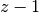
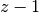
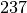
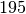
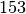
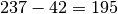

3.9. How does the solver optimize?
The main idea is simple. When you define an objective function, like in golom1.cc:
OptimizeVar* const length = s.MakeMinimize(Y[num_vars - 1], 1);
you tell the solver basically three things:
- you want to minimize the objective function;
- the objective function is defined by the variable Y[num_vars - 1] and
- the improvement step is
.
What the last part means is that the solver will try each time it has found a feasible solution
with a value  , to find another better solution with value  and so on until
it cannot find a feasible solution with a give value
, to find another better solution with value  and so on until
it cannot find a feasible solution with a give value  . The optimal value is thus
in this case .
. The optimal value is thus
in this case .
You can give whatever (positive) integer value as improvement step to the solver:
OptimizeVar* const obj = s.MakeMaximize(obj_var, 42);
but beware that by default, there isn’t any smart algorithm implemented in or-tools to change this improvement step during the search. If the solver finds a solution with an objective value of , it will try next to find a solution with an objective value of [1]. If it finds one, it will try to find another solution with an objective value of  but if didn’t find any feasible solution with a value of , it will stop the search and return the “best” solution with a value of !
| [1] | It took us a while but we are pretty sure that . |
If you use an improvement step of , you can be sure to reach an optimal solution if you give enough time an memory to the
solver but you could devise you own algorithm to change this improvement step during the search.
In chapter “8. Implementing custom constraints”, we will use a SearchMonitor to change dynamically the improvement step during the search.
Google or-tools |
User's Manual
Google search
Welcome
Tutorial examples
Current chapter
3. Using objectives in constraint programming: the Golomb ruler problem
Previous section
3.8. How to tighten the model?